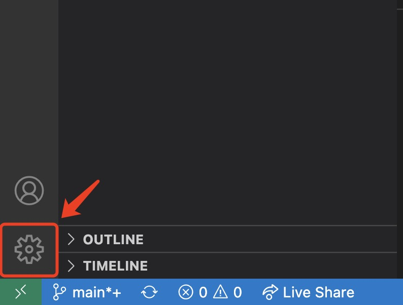
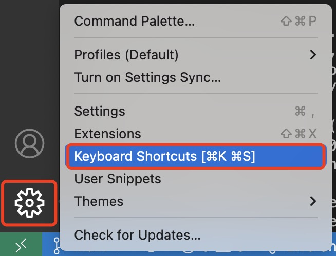
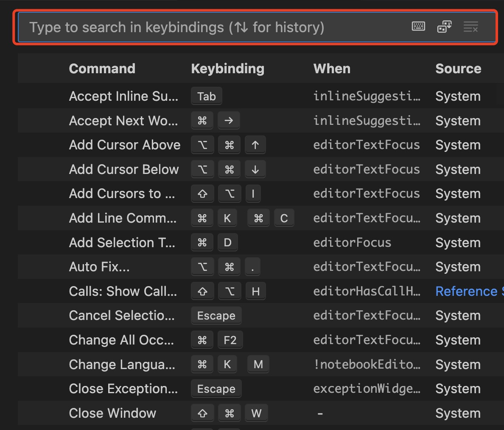
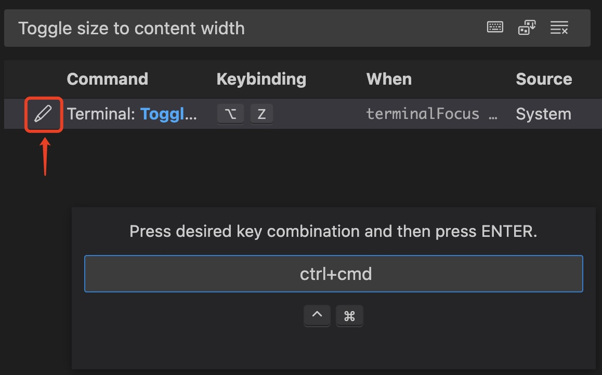
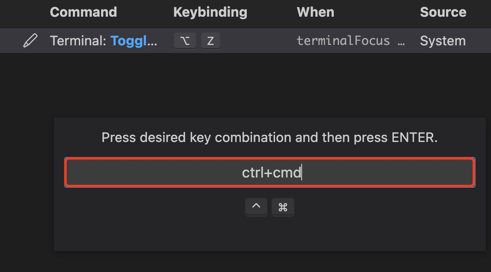
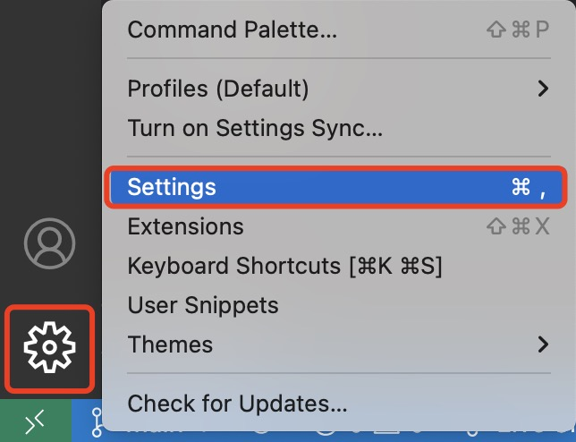
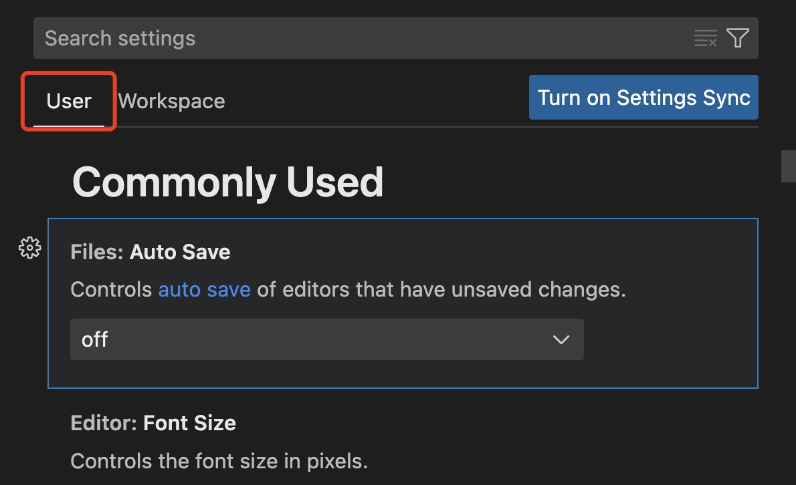

You are a developer now! As such it is important to know how to navigate and work the many settings of VS Code.
This section will detail how to manipulate save settings and hotkey manipulation.
Customizing Hotkeys
VS Code offers a variety of hotkeys to help you save time as you work. In this example we will be setting the hotkey Alt + z to autoformat text.
Open VS Code, from the landing page select the manage icon on the bottom of left navbar.

Select key board shortcuts from the popup. A new window will open present with all hotkeys VS Code offers.
info
This step may be accessed directly by typing Ctrl + K Ctrl + S on your keyboard.

You can manage all the hotkeys on this window, and check the hotkeys for your current OS.
Type the following in the search bar:
Terminal:Togglesizetocontentwidth

Toggle size to content width helps you autoformat your text to fit your current window size.
Select the hot key from the search results. A popup window will appear prompting you to enter your desired hot key.

Type your hot key in the popup text box and hit enter to save your changes. We recommend Alt + Z.
info
If the hotkey you wish to use is already in use by another setting, VS Code with prompt you with a warning you before saving any changes.

Customizing Save Settings
It is important to always save your work. Nothing is more frustrating than working an a problem for hours only to loose all your progress because you did not save. Luckily, VS Code offers autosave features customizable by time, and user actions.
Here we will demonstrate how to customize your autosave to be preformed after switching to a new tab.
Open VS Code, from the landing page select the manage icon on the bottom of left navbar. A popup menu will appear as the image below.
Select settings from the popup menu. A new window will open present with save settings.
!!! info "info"
This step may be accessed directly by typing Ctrl+ on your keyboard.

Select the commonly used bar located under the user tab.

Off is the default option that will disable autosave.
Select the dropdown menu under Files: Autosave and choose OnFocusChange.
info
onFocusChange auto-saves files both when you switch windows on your computer and when you switch tabs within VSCode.